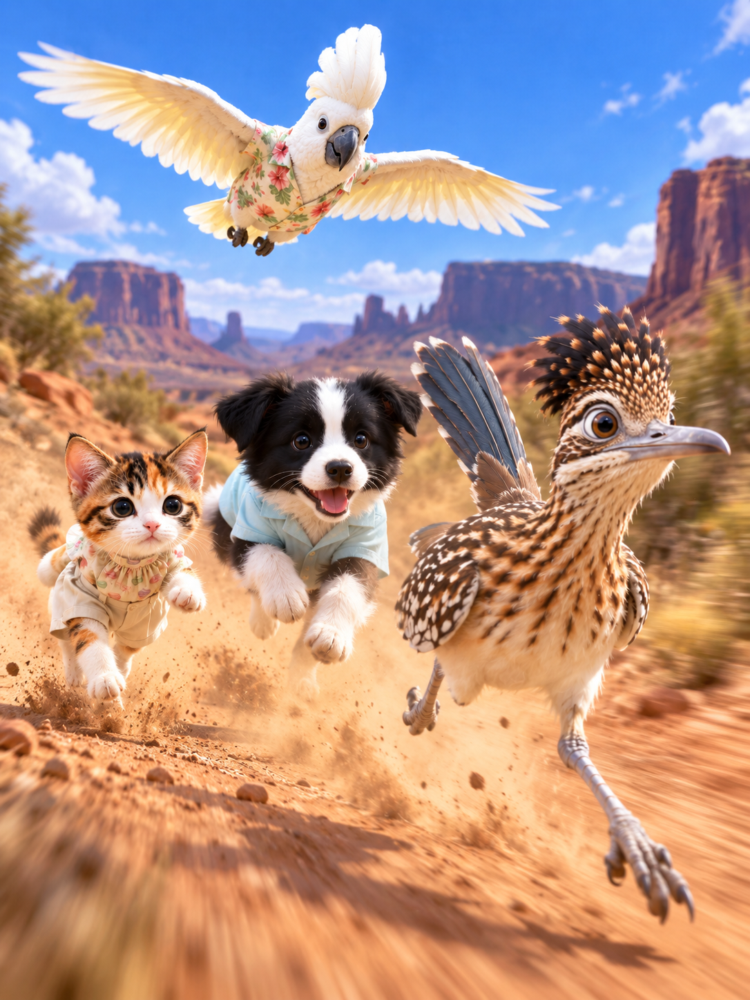
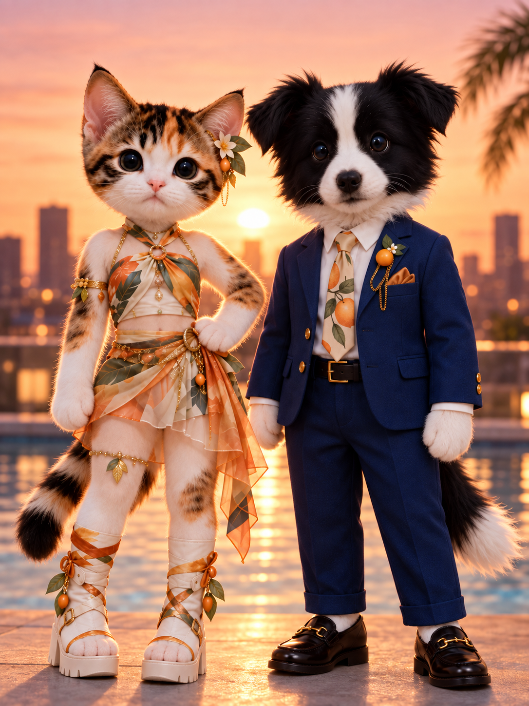
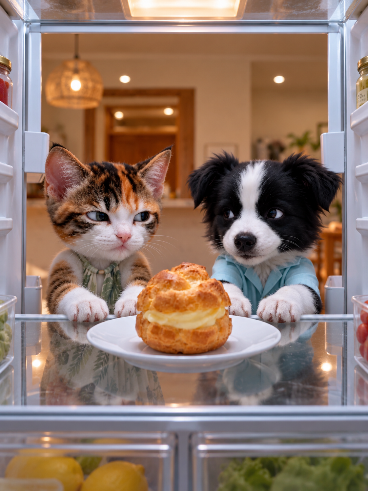
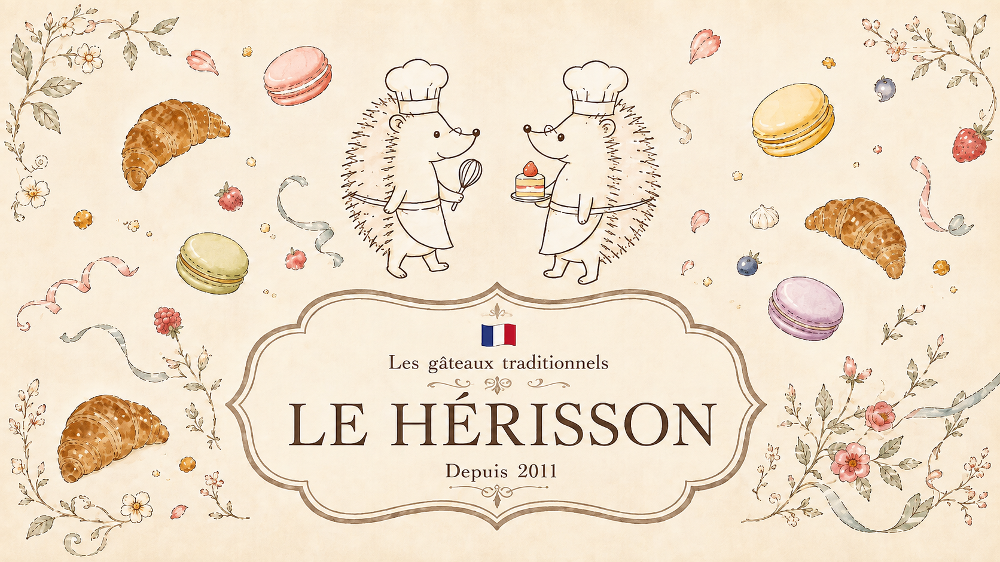
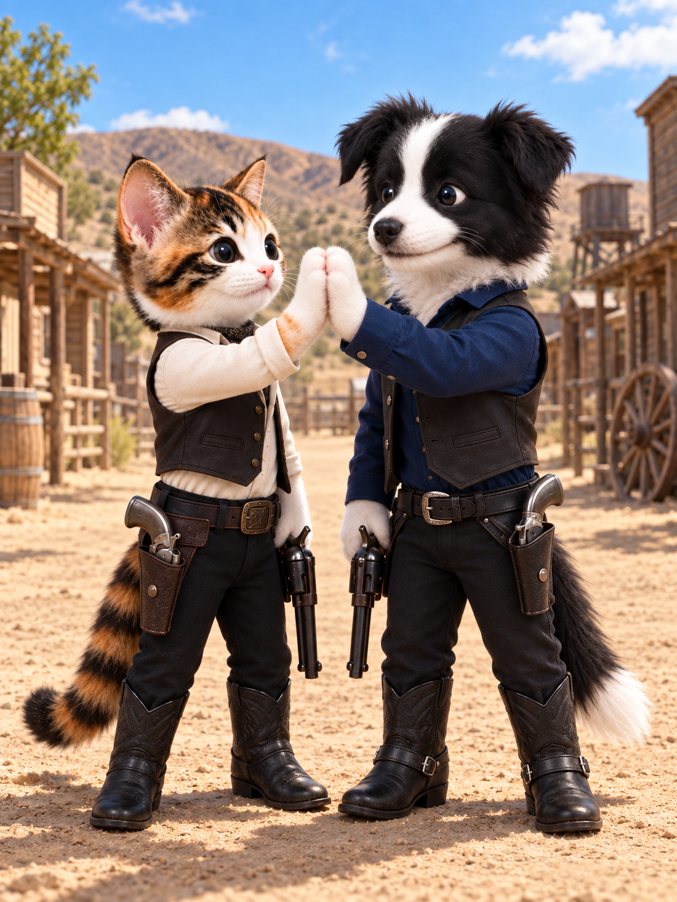

AI VIDEO & VISUAL CREATOR
かわいい、その先の「おもしろい」を。
豊かな表情と、ちょっと意外な展開。ショート動画からPR・MVまで、アイデアを映像に。



お名前、返信先メールアドレス、ご相談内容など、ご提供いただいた情報は、お問い合わせへの対応と制作に関するご連絡に使用します。
動画のサムネイルはYouTubeから取得する場合があります。動画の再生操作をすると、YouTubeの埋め込みプレーヤーに接続します。Instagram、X、お店のサイトなどへのリンク先には、それぞれのサービスのプライバシーポリシーが適用されます。
Googleフォームの受付開始後は、フォームを通して送信した内容をGoogleのサービスで管理します。回答内容をこのサイトに公開することはありません。
情報の取り扱いについては、moframeのInstagramよりご連絡ください。